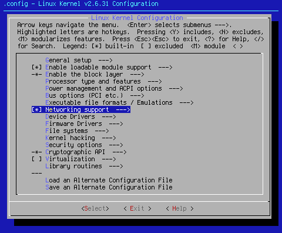
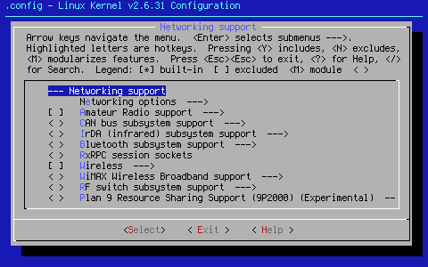
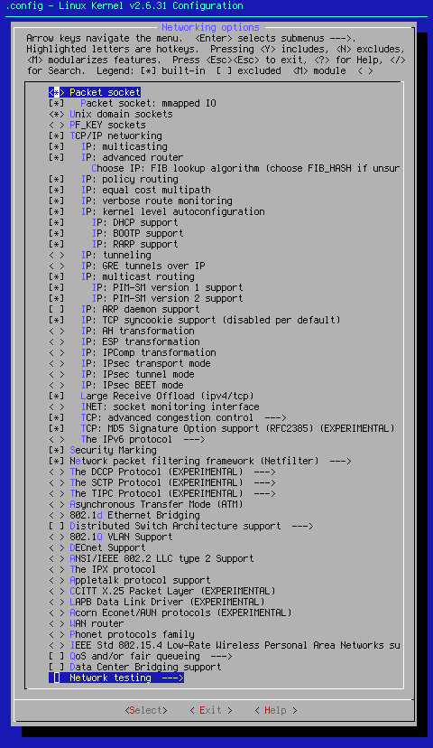

Custom Search
This page is going to specifically cover [*] Networking support --->.
Before I begin, I need to say that these setting have been largely ignored during the seed making process. They are as they were from the original make defconfig. Except for turning off IPv6, these settings are what you get "right out of the box."
In the cases where I indicate a settings tree, some settings are dependent on others. The trees are indications of what you would see with all possible settings in the tree turned on. In actual practice, you may not need, want, or be able to turn on all sub-settings in the settings trees. The trees are done in this way to illustrate all settings possibilities, not necessarily all possible combinations.
Further, expanded trees that default to off won't have * or M contained within < > or [ ]. In these cases, the setting trees are shown for completeness, without regard to what their functional state would be if they defaulted to on.

Arrow key down to the area shown. When you hit <Select> at this point, you will bring up the following sub page:

According to < Help >,"Unless you really know what you are doing, you should say Y here. The reason is that some programs need kernel networking support even when running on a stand-alone machine that isn't connected to any other computer."
That reason would be 127.0.0.1. Without it, your computer could have all manner of problems, or fail to run at all. This is a must have!
Arrow key down to the area shown. When you hit <Select> at this point, you will bring up the following sub page:

<*> Packet socket
According to < Help >,"The Packet protocol is used by applications which communicate directly with network devices without an intermediate network protocol implemented in the kernel, e.g. tcpdump. If you want them to work, choose Y."
The list of applications that require this setting is long. For that reason, this setting defaults to on, and should stay on.
[*] Packet socket: mmapped IO
This setting allows for speedier, more efficient network operation. If you wish to be able to use mmapped IO with your NIC, this setting should be on. Since efficient net operation is a very good thing, this setting defaults to on.
<*> Unix domain sockets
This is another very important setting. X requires this to be turned on, as do just about every network program. This setting defaults to on.
< > PF_KEY sockets
While < Help > says this setting is best turned on, in actual fact, this setting, if turned on at all, is best turned on as a module. If not, openswan and other applications that rely on this setting will fail. Most users won't need this. This setting defaults to off.
[*] TCP/IP networking
Since Linux uses TCP/IP pretty much exclusively, it stands to reason this setting should be on. That's why this setting defaults to on.
[*] IP: multicasting
The IP: multicasting settings tree is as follows:
[*] IP: multicast routing
[*] IP: PIM-SM version 1 support
[*] IP: PIM-SM version 2 support
[*] IP: multicasting allows you to broadcast content to numerous machines at once. This is mostly for Intenet broadcasters. This is one of the first settings likely to change in the next seed settings iteration. This setting currently defaults to on.
[*] IP: advanced router
The [*] IP: advanced router settings tree is as follows:
[*] IP: advanced router
Choose IP: FIB lookup algorithm (choose FIB_HASH if unsure --->)
(X) FIB_HASH
( ) FIB_TRIE
[*] IP: policy routing
[*] IP: equal cost multipath
[*] IP: verbose route monitoring
If you plan on using your machine as a router, this is a must have setting. While I'm sure there are folks out there who do this, I'm not so sure it should be set up in the kernel seeds. This group of settings is currently under experimentation. For now, this setting defaults to on.
Choose IP: FIB lookup algorithm (choose FIB_HASH if unsure) (FIB_HASH) --->
When you hit select, you see the following options:
(X) FIB_HASH
( ) FIB_TRIE
However, you also get told the consequences of using ( ) FIB_TRIE: "LC-trie is a longest matching prefix lookup algorithm which performs better than FIB_HASH for large routing tables. But, it consumes more memory and is more complex." Use that as your guide when setting this up. This setting currently defaults to (X) FIB_HASH.
[*] IP: policy routing
This setting makes it possible for other factors besides final destination address to determine the path of packets. This is most useful to multi homed systems; machines that receive the Internet from more than one IP connection. Since most people don't require this sort of functionality, this setting is soon to change. This setting currently defaults to on.
[*] IP: equal cost multipath
Once again, this setting is used for multi homed systems. As above, this setting is definitely going to change with the next seed settings iteration. This setting currently defaults to on.
[*] IP: verbose route monitoring
This setting allows the kernel to print verbose messages about packets. This includes information about suspicious packets. This information could be used to track hackers or find systemic misconfiguration. If you're going to run a router, it makes sense to use this. This setting defaults to on.
[*] IP: kernel level autoconfiguration
The [*] IP: kernel level autoconfiguration settings tree is as follows:
[*] IP: kernel level autoconfiguration
[*] IP: DHCP support
[*] IP: BOOTP support
[*] IP: RARP support
According to < Help >,"You need to say Y only for diskless machines requiring network access to boot (in which case you want to say Y to "Root file system on NFS" as well), because all other machines configure the network in their startup scripts."
Unless you have a machine that boots from your network, this is unnecessary in the scope of the kernel seed.
[*] IP: DHCP support
[*] IP: BOOTP support
[*] IP: RARP support
Use these options to select which sort of net support you want to give to your net booted machine. Currently, all settings in this group default to on. That is going to change.
<*> IP: tunneling
According to < Help >,"Tunneling means encapsulating data of one protocol type within another protocol and sending it over a channel that understands the encapsulating protocol."
While there are numerous times and places that tunneling is a good idea, its use is really beyond the scope of the kernel seed. As a general rule, this setting is unnecessary for most people. Those who need it know who they are. Those who don't know what it is don't need it.
<*> IP: GRE tunnels over IP
This setting allows for the encapsulation of IPv4 and IPv6 datagrams over existing IPv4 infrastructure. This driver is also favored by Cisco routers. Since I have no Cisco routers in my LAN, and I have support IPv6 turned off, this setting defaults to off.
[*] IP: multicast routing
This setting gets turned on with [*] IP: multicasting, as described above. Since [*] IP: multicasting is getting turned off, so is this setting. This setting currently defaults to on.
[*] IP: PIM-SM version 1 support
[*] IP: PIM-SM version 2 support
Since [*] IP: multicasting is getting turned off, so are these settings. They currently default to on.
[ ] IP: ARP daemon support
ARP cache is generally organized and run by the kernel. Turning this setting on allows for userspace control. This has numerous applications, but being a part of the kernel seed isn't one of them. Those who need this turned on know it. Those who don't know it exists (and some that do) will never miss it. This setting defaults to off.
[*] IP: TCP syncookie support (disabled per default)
This is one of those settings that make me wonder why it was ever put in the kernel in the first place, much less turned on with the standard make defconfig. Not only do you have to enable this here, but you have to do some sysctl incantations to make it all work. It is also a hack that was never popular to begin with, and is on the way out of the kernel. This setting currently defaults to on. It will not stay that way.
The next six settings are concerned with various aspects of IPsec:
< > IP: AH transformation
< > IP: ESP transformation
< > IP: IPComp transformation
< > IP: IPsec transport mode
< > IP: IPsec tunnel mode
< > IP: IPsec BEET mode
When any of the above are turned on, the following options become visible:
< > Transformation user configuration interface
[ ] Transformation sub policy support (EXPERIMENTAL) (NEW)
[ ] Transformation migrate database (EXPERIMENTAL) (NEW)
[ ] Transformation statistics (EXPERIMENTAL) (NEW)
IPsec, or IP security is a group of settings that add security to your IP network through the use of encryption. IPsec is a topic which is way beyond the scope of the kernel seed. This group of settings defaults to off.
[*] Large Receive Offload (ipv4/tcp)
If you're moving big files around your network, this is a good setting to have turned on. This setting defaults to on.
< > INET: socket monitoring interface
According to < Help >,"Support for INET (TCP, DCCP, etc) socket monitoring interface used by native Linux tools such as ss. ss is included in iproute2."
If you use iproute2, you definitely want to turn this on. This setting is definitely going under experimentation. For the moment, this setting defaults to off.
[ ] TCP: advanced congestion control --->
The TCP: advanced congestion control settings tree is as follows:
--- TCP: advanced congestion control
< > Binary Increase Congestion (BIC) control
<*> CUBIC TCP
< > TCP Westwood+
< > H-TCP
< > High Speed TCP
< > TCP-Hybla congestion control algorithm
< > TCP Vegas
< > Scalable TCP
< > TCP Low Priority
< > TCP Veno
< > YeAH TCP
< > TCP Illinois
Default TCP congestion control (Cubic) --->
I have experimented with these settings in the past, and found that for the most part, the default setting (cubic) does work best over all. Play with these settings to fine tune your congestion control.
[*] TCP: MD5 Signature Option support (RFC2385) (EXPERIMENTAL)
According to < Help >,"RFC2385 specifies a method of giving MD5 protection to TCP sessions. Its main (only?) use is to protect BGP sessions between core routers on the Internet."
The Border Gateway Protocol (BGP) is very important for ISP's to be able to connect with each other. The standard user doesn't need this setting. This setting currently defautls to on, but will likely change in the next seed settings iteration.
< > The IPv6 protocol --->
This setting allows for IPv6 support. Since there are few ISP's using IPv6, and because there are many userspace programs that don't support IPv6, and can malfunction with it, IPv6 is not supported by the kernel seed.
Please note, for reasons of brevity, I will save explanation of the IPv6 tree for an upcoming batch of appendices. As you will find, there is already a lot of information on this page. Since turning on IPv6 changes numerous options, explaining it here would grow this page to monstrous dimensions.
[*] Security Marking
This setting allows you to mark your packets with security information. This setting defaults to on.
[*] Network packet filtering framework (Netfilter) --->
You should turn this setting on if you plan on doing any of the following: filter packets, use iptables, or otherwise want to filter and be able to mangle packets. Because this setting is needed by so many other things, it defaults to on.
< > The DCCP Protocol (EXPERIMENTAL) --->
The DCCP CCIDs Configuration settings tree is as follows:
< > The DCCP Protocol (EXPERIMENTAL) --->
DCCP CCIDs Configuration (EXPERIMENTAL) --->
[ ] CCID-2 debugging messages
[ ] CCID-3 (TCP-Friendly) (EXPERIMENTAL)
[ ] CCID-3 debugging messages
( ) Use higher bound for nofeedback timer (NEW)
DCCP Kernel Hacking --->
[ ] DCCP debug messages
< > DCCP connection probing
According to < Help >,"The Datagram Congestion Control Protocol (DCCP) is a transport protocol that implements bidirectional, unicast connections of congestion-controlled, unreliable datagrams. It should be suitable for use by applications such as streaming media, Internet telephony, and on-line games." If you need this kind of support, turn this option and sub options on.
These settings are listed for completeness and default to off.
The SCTP Protocol
The < > The SCTP Protocol (EXPERIMENTAL) ---> settings tree is as follows:
--- The SCTP Protocol (EXPERIMENTAL)
[ ] SCTP: Debug messages
[ ] SCTP: Debug object counts
SCTP: Cookie HMAC Algorithm (HMAC-MD5) --->
( ) None
( ) HMAC-SHA1
(X) HMAC-MD5
From RFC 2960
-- acknowledged error-free non-duplicated transfer of user data,
-- data fragmentation to conform to discovered path MTU size,
-- sequenced delivery of user messages within multiple streams, with an option for order-of-arrival delivery of individual user messages,
-- optional bundling of multiple user messages into a single SCTP packet, and
-- network-level fault tolerance through supporting of multi-homing at either or both ends of an association."
These settings are listed for completeness and default to off.
< > The TIPC Protocol (EXPERIMENTAL) --->
The TIPC Protocol settings tree is as follows:
[ ] TIPC: Advanced configuration
(3) Maximum number of zones in network (NEW)
(1) Maximum number of clusters in a zone (NEW)
(255) Maximum number of nodes in cluster (NEW)
(0) Maximum number of slave nodes in cluster (NEW)
(8191) Maximum number of ports in a node (NEW)
(0) Size of log buffer (NEW)
The Transparent Inter-Process Communication protocol allows applications in a clustered computer environment to communicate quickly and reliably with other applications, regardless of their location within the cluster. These settings are listed for completeness and default to off.
< > Asynchronous Transfer Mode (ATM)
The Asynchronous Transfer Mode settings tree is as follows:
< > Asynchronous Transfer Mode (ATM)
< > Classical IP over ATM
[ ] Do NOT send ICMP if no neighbour
< > LAN Emulation (LANE) support
< > Multi-Protocol Over ATM (MPOA) support
< > RFC1483/2684 Bridged protocols
[ ] Per-VC IP filter kludge
ATM is a special, high speed networking setup. It requires special hardware to work. It is also a requirement for those with USB ADSL devices. Without ATM turned on, the USB ADSL option is not available. If you have ATM compliant hardware, turn these settings on. These settings are listed for completeness and default to off.
< > 802.1d Ethernet Bridging
According to < Help >,"If you say Y here, then your Linux box will be able to act as an Ethernet bridge, which means that the different Ethernet segments it is connected to will appear as one Ethernet to the participants."
Since that's a bit beyond the idea of the kernel seed, this setting defaults to off.
[ ] Distributed Switch Architecture support --->
The Distributed Switch Architecture support settings tree is as follows:
[ ] Marvell 88E6060 ethernet switch chip support (NEW)
[ ] Marvell 88E6095/6095F/6131 ethernet switch chip support (NEW)
[ ] Marvell 88E6123/6161/6165 ethernet switch chip support (NEW)
This setting allows you to use hardware switches that use the Distributed Switch Architecture. If you have these devices, turn these settings on. These settings are listed for completeness. These settings default to off.
< > 802.1Q VLAN Support
The 802.1Q VLAN Support settings tree is as follows:
< > 802.1Q VLAN Support
[ ] GVRP (GARP VLAN Registration Protocol) support
A VLAN has the same attributes as a physical LAN, but it allows for end stations to be grouped together even if they are not located on the same network switch. For those who desire this functionality, you may turn these settings on. Since a VLAN is outside of the basic nature of the seed, these settings default to off.
< > DECnet Support
The DECnet Support settings tree is as follows:
< > DECnet Support
[ ] DECnet: router support (EXPERIMENTAL) (NEW)
According to the Sourceforge Wiki, "DECnet for Linux is only really of use to you if you have OpenVMS machines, or other machines that use DECnet, on your site." If you have any machines that fit this bill, then you can turn on these settings. Since most people don't know what DECnet is, most people don't need it. Because of this, this setting defaults to off.
< > ANSI/IEEE 802.2 LLC type 2 Support
According to < Help >,"This is a Logical Link Layer type 2, connection oriented support. Select this if you want to have support for PF_LLC sockets."
This functionality is well beyond the need of most users. For that reason, this setting defaults to off.
< > The IPX protocol
The The IPX protocol settings tree is as follows:
< > The IPX protocol
[ ] IPX: Full internal IPX network (NEW)
IPX support allows your Linux box to connect to Novell machines. If you have need of this functionality, you can turn this on. Since most people aren't connected to Novell networks, this setting defaults to off.
< > Appletalk protocol support
The Appletalk protocol support settings tree is as follows:
< > Appletalk protocol support
< > Appletalk interfaces support
< > Appletalk-IP driver support
[ ] IP to Appletalk-IP Encapsulation support
[ ] Appletalk-IP to IP Decapsulation support
According to NeddySeagoon, The Appletalk protocol, "is a 115,000 baud serial protocol. It was used on 680x0 based Macs but even the later ones grew ethernet. These settings should be off unless you have a 20 year old Mac." These settings default to off.
< > CCITT X.25 Packet Layer (EXPERIMENTAL)
< > LAPB Data Link Driver (EXPERIMENTAL)
These two settings are related. They apply to an old, rarely used network setup. These settings are turned off by default.
< > Acorn Econet/AUN protocols (EXPERIMENTAL)
The Acorn Econet/AUN protocols support settings tree is as follows:
< >
[ ] AUN over UDP
[ ] Native Econet
Econet is a very old, very slow networking system. It's old. It's slow. It's turned off by default.
< > WAN router
This setting allows you to use your box as a WAN router. To do so, it needs an interface card along with the kernel settings and some userspace packages. If you want this, and have the required equipment, turn this on. This setting defaults to off.
< > Phonet protocols family
The Phone Network protocol (PhoNet) is a packet-oriented communication protocol developed by Nokia for use with its modems. If you have one of these modems, turn this on. Since most people don't, this setting defaults to off.
< > IEEE Std 802.15.4 Low-Rate Wireless Personal Area Networks support (EXPERIMENTAL)
According to < Help >,"IEEE Std 802.15.4 defines a low data rate, low power and low complexity short range wireless personal area networks." This is new code. It is also apparently a limited use sort of thing. If you have the hardware to make this work, turn it on. This setting defaults to off.
[ ] QoS and/or fair queueing --->
The QoS and/or fair queueing support settings tree is as follows:
--- QoS and/or fair queueing
*** Queueing/Scheduling ***
< > Class Based Queueing (CBQ) (NEW)
< > Hierarchical Token Bucket (HTB) (NEW)
< > Hierarchical Fair Service Curve (HFSC) (NEW)
< > Multi Band Priority Queueing (PRIO) (NEW)
< > Hardware Multiqueue-aware Multi Band Queuing (MULTIQ) (NEW)
< > Random Early Detection (RED) (NEW)
< > Stochastic Fairness Queueing (SFQ) (NEW)
< > True Link Equalizer (TEQL) (NEW)
< > Token Bucket Filter (TBF) (NEW)
< > Generic Random Early Detection (GRED)
< > Differentiated Services marker (DSMARK) (NEW)
< > Network emulator (NETEM) (NEW)
< > Deficit Round Robin scheduler (DRR) (NEW)
*** Classification ***
< > Elementary classification (BASIC) (NEW)
< > Traffic-Control Index (TCINDEX) (NEW)
< > Routing decision (ROUTE) (NEW)
< > Netfilter mark (FW) (NEW)
< > Universal 32bit comparisons w/ hashing (U32) (NEW)
< > IPv4 Resource Reservation Protocol (RSVP) (NEW)
< > IPv6 Resource Reservation Protocol (RSVP6) (NEW)
< > Flow classifier (NEW)
[ ] Extended Matches
(32) Stack size (NEW)
< > Simple packet data comparison
< > Multi byte comparison
< > U32 key
< > Metadat
< > Textsearch
[ ] Actions
< > Traffic Policing
< > Generic actions
[ ] Probability support
< > Redirecting and Mirroring
< > IPtables targets
< > Stateless NAT
< > Packet Editing
< > Simple Example (Debug)
< > SKB Editing
[ ] Incoming device classification
These settings allow you to choose to use fair queueing for your network packets instead of the standard FIFO queueing system. It is best used with firewall or gateway boxes. These settings default to off.
[ ] Data Center Bridging support
This setting applies to specific hardware systems. If you have these sorts of devices, turn this on. This setting defaults to off.
Network testing --->
The Network testing support settings tree is as follows:
< > Packet Generator (USE WITH CAUTION)
< > TCP connection probing
[ ] Network packet drop alerting service
Since this group of settings comes with its own warning, and since network testing isn't a part of the kernel seeds paradigm, this group of settings default to off.
We can now < Exit > out of Networking options --->, and move on to the next section:
[ ] Amateur Radio support --->
The Amateur Radio support support settings tree is as follows:
--- Amateur Radio support
*** Packet Radio protocols ***
< > Amateur Radio AX.25 Level 2 protocol
[ ] AX.25 DAMA Slave support (NEW)
< > Amateur Radio NET/ROM protocol
< > Amateur Radio X.25 PLP (Rose)
AX.25 network device drivers --->
< > Serial port KISS driver (NEW) < > Serial port 6PACK driver (NEW) < > BPQ Ethernet driver (NEW) < > BAYCOM ser12 fullduplex driver for AX.25 (NEW) < > BAYCOM ser12 halfduplex driver for AX.25 (NEW) < > YAM driver for AX.25 (NEW)
If you wish to connect your machine to an amateur radio, this is the setting for you. Contrary to what I've seen in numerous .configs, these settings have nothing to do with modern wireless networking or wireless networking devices. This is using an amateur radio like a modem. If you have the hardware, turn these settings on. These settings default to off.
< > CAN bus subsystem support --->
The CAN bus subsystem support settings tree is as follows:
--- CAN bus subsystem support < > Raw CAN Protocol (raw access with CAN-ID filtering) < > Broadcast Manager CAN Protocol (with content filtering) CAN Device Drivers --->
< > Virtual Local CAN Interface (vcan) < > Platform CAN drivers with Netlink support [ ] CAN bit-timing calculation < > Philips SJA1000 < > Generic Platform Bus based SJA1000 driver < > EMS CPC-PCI and CPC-PCIe Card < > Kvaser PCIcanx and Kvaser PCIcan PCI Cards [ ] CAN devices debugging messages
According to < Help >,"Controller Area Network (CAN) is a slow (up to 1Mbit/s) serial communications protocol which was developed by Bosch in 1991, mainly for automotive, but now widely used in marine (NMEA2000), industrial, and medical applications." This requires special hardware, and userspace programs as well to work. These settings default to off.
< > IrDA (infrared) subsystem support --->
The IrDA (infrared) subsystem support settings tree is as follows:
--- IrDA (infrared) subsystem support
*** IrDA protocols ***
[ ] Ultra (connectionless) protocol
*** IrDA options ***
[ ] Cache last LSAP
[ ] Fast RRs (low latency)
[ ] Debug information (NEW)
Infrared-port device drivers --->
*** SIR device drivers ***
< > IrTTY (uses Linux serial driver) (NEW)
*** Dongle support ***
< > KingSun/DonShine DS-620 IrDA-USB dongle (NEW)
< > KingSun Dazzle IrDA-USB dongle (EXPERIMENTAL) (NEW)
< > KingSun KS-959 IrDA-USB dongle (EXPERIMENTAL) (NEW)
*** FIR device drivers ***
< > IrDA USB dongles (NEW)
< > SigmaTel STIr4200 bridge (EXPERIMENTAL) (NEW)
< > NSC PC87108/PC87338 (NEW)
< > Winbond W83977AF (IR) (NEW)
< > SMSC IrCC (EXPERIMENTAL) (NEW)
< > ALi M5123 FIR (EXPERIMENTAL) (NEW)
< > VLSI 82C147 SIR/MIR/FIR (EXPERIMENTAL) (NEW)
< > VIA VT8231/VT1211 SIR/MIR/FIR (NEW)
< > MosChip MCS7780 IrDA-USB dongle (NEW)
According to < Help >," The Infrared Data Associations (tm) specifies standards for wireless infrared communication and is supported by most laptops and PDA's." If you have the proper hardware, use these settings to make it work. This setting defaults to off.
< > Bluetooth subsystem support --->
The Bluetooth subsystem support settings tree is as follows:
--- Bluetooth subsystem support
< > L2CAP protocol support
< > SCO links support
< > RFCOMM protocol support
[ ] RFCOMM TTY support
< > BNEP protocol support
[ ] Multicast filter support
[ ] Protocol filter support
< > HIDP protocol support
Bluetooth device drivers --->
< > HCI UART driver
[ ] UART (H4) protocol support
[ ] BCSP protocol support
[ ] HCILL protocol support
< > HCI BCM203x USB driver
< > HCI BPA10x USB driver
< > HCI BlueFRITZ! USB driver
< > HCI VHCI (Virtual HCI device) driver
< > RxRPC session sockets
[ ] RxRPC dynamic debugging
< > RxRPC Kerberos security
The code for these settings is incomplete, and is highly experimental (read "broken"). Therefore, they are not recommended for use. These settings default to off.
[ ] Wireless --->
The Wireless settings tree is as follows:
--- Wireless
< > Improved wireless configuration API
[ ] cfg80211 regulatory debugging
[ ] cfg80211 DebugFS entries
[ ] Old wireless static regulatory definitions
-*- Wireless extensions
[ ] Wireless extensions sysfs files
< > Common routines for IEEE802.11 drivers
[ ] lib80211 debugging messages
< > Generic IEEE 802.11 Networking Stack (mac80211)
[ ] enable powersave by default (NEW)
Rate control algorithm selection --->
Default rate control algorithm (Minstrel) --->
[ ] Enable LED triggers
[ ] Export mac80211 internals in DebugFS
[ ] Select mac80211 debugging features --->
--- Select mac80211 debugging features
[ ] Enable packet alignment debugging
[ ] Do not inline TX/RX handlers
[ ] Verbose debugging output
[ ] Verbose HT debugging
[ ] Verbose TKIP debugging
[ ] Verbose IBSS debugging
[ ] Verbose powersave mode debugging
[ ] Extra statistics for TX/RX debugging
These are the basic settings required to get wireless networking operation. Once you set these settings, you will then have to choose your wireless device driver (in another section of the kernel), or use the external driver, such as broadcom-sta or ndiswrapper. In any event, these settings are essential for wireless networking. Since there are so many numerous wireless devices, and so many machines without them, these settings default to off.
< > WiMAX Wireless Broadband support --->
This setting allows for the use of USB Wireless Broadband devices. Some of these devices require service plans with a Broadband provider, other WiMAX devices do not. If you have one of these devices, turn this setting on. This setting defaults to off.
< > RF switch subsystem support --->
This setting activates RF control switches for certain wireless and WiMAX broadband devices. This setting is not required for standard wireless operation. If you desire to be able to switch your RF on and off, this is the setting. This setting defaults to off, and isn't recommended unless absolutely called for by your hardware to operate properly.
According to < Help >,"If you say Y here, you will get experimental support for Plan 9 resource sharing via the 9P2000 protocol."
Since this is experimental code, it defaults to off.
Take a breather. You've made it to the end of page 7.
Cheers,
Pappy